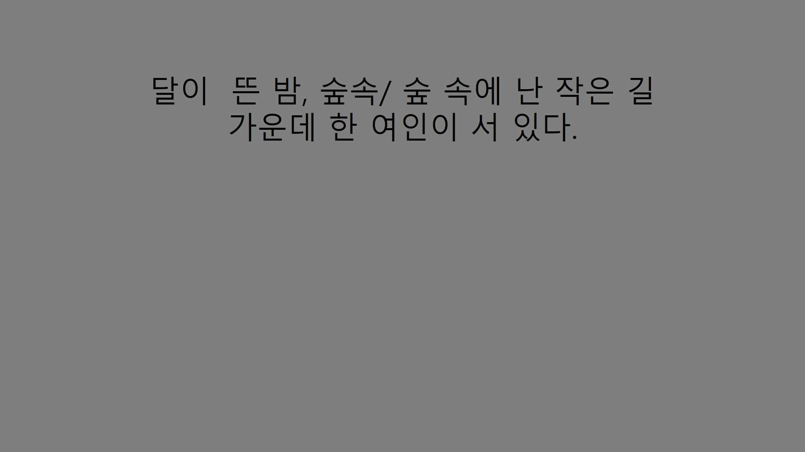
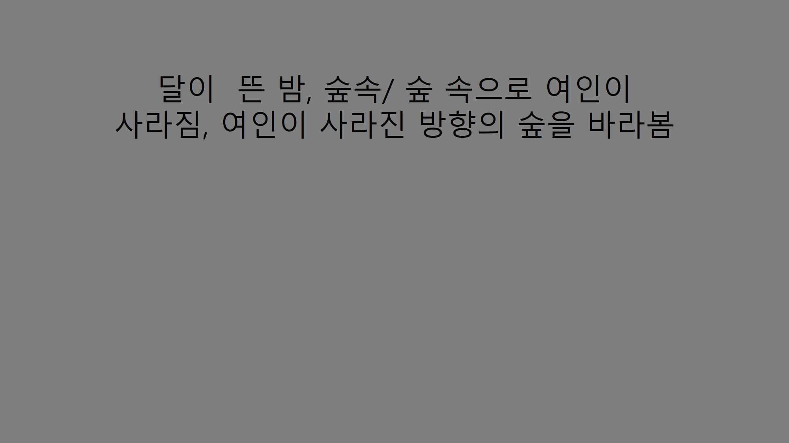

그때, 나는 아무것도 생각할 수 없었다.
그 여인을 보고 느껴지는 단 하나의 강렬한 감각을 제외하고는....
그것은 "아름다움"이라는 감각이었다.

주인공:
저기.. 잠시만요!
나의 다급한 외침에도 그녀는 달빛이 비치는 어두운 숲속으로 사라져가고 있었다.
그녀를 따라간다
따라가지 않는다
Made by. Handahun
본 작품은 Goerge Gordon Byron의 She Walks in Beauty를 모티프로 하여 만들어졌습니다.